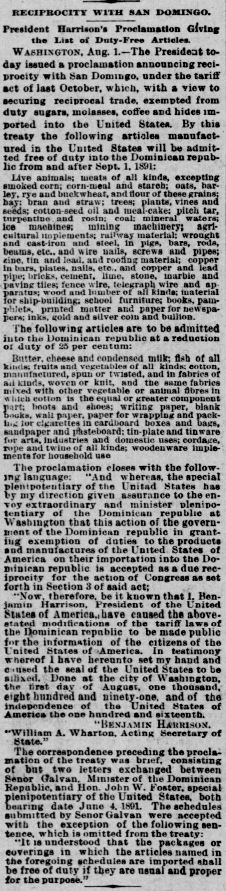
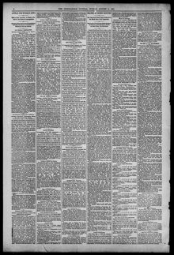

Into the Dominican republic at a reduction oi duty of 5 per centumA la república dominicana con una reducción de derechos de 5
The Indianapolis Journal. Indianapolis [Ind.], August 2, 1891. Page 4. Published by Douglass & Conner. A daily newspaper, 1867–1904.The Indianapolis Journal. Indianapolis [Ind.], 2 de agosto de 1891. Página 4. Publicado por Douglass & Conner. Periódico diario, 1867–1904. View the originalVer el original


See the full pageVer la página completaThe Indianapolis Journal published President Benjamin Harrison’s proclamation detailing the reciprocal trade agreement established with the Dominican Republic under the McKinley Tariff Act. Under the agreement, the Dominican Republic granted a 25 percent reduction in duties on various American exports, including dairy products, cotton goods, footwear, and manufactured wares. In return, the United States maintained duty-free entry for key Dominican agricultural products.The Indianapolis Journal publicó la proclama del presidente Benjamin Harrison en la que se detallaba el acuerdo de reciprocidad comercial concertado con la República Dominicana al amparo de la Ley Arancelaria McKinley. En virtud del acuerdo, la República Dominicana otorgó una reducción del 25 por ciento en los aranceles de varias exportaciones estadounidenses, incluidos productos lácteos, artículos de algodón, calzado y manufacturas. A cambio, Estados Unidos mantuvo la entrada libre de impuestos para productos agrícolas dominicanos clave.
FULL TEXT:TEXTO COMPLETO:
The Indianapolis Journal August 2, 18912 de agosto de 1891
RECIPROCITY WITH SAN DOMINGO.RECIPROCIDAD CON SANTO DOMINGO.
President Harrison's Proclamation Giving the List of Duty-Free Articles.La proclama del presidente Harrison dando la lista de artículos libres de derechos.
WASHINGTON, Aug. 1.—The President to-day issued a proclamation announcing reciprocity with San Domingo, under the tariff act of last October, which, with a view to securing reciprocal trade, exempted from duty sugars, molasses, coffee and hides imported into the United States. By this treaty the following articles manufactured in the United States will be admitted free of duty into the Dominican republic from and after Sept. 1, 1891:WASHINGTON, 1 de agosto.—El Presidente hoy emitió una proclama anunciando reciprocidad con Santo Domingo, bajo la ley arancelaria del pasado octubre, que, con miras a asegurar comercio recíproco, eximió de derechos azúcares, melaza, café y cueros importados a los Estados Unidos. Por este tratado los siguientes artículos manufacturados en los Estados Unidos serán admitidos libres de derechos en la república dominicana desde y después del 1 de septiembre de 1891:
Live animals; meats of all kinds, excepting smoked corn; corn-meal and starch; oats, barley, rye and buckwheat, and flour of these grains; hay; bran and straw; trees; plants, vines and seeds; cotton-seed oil and meal-cake; pitch tar, turpentine and rosin; coal; mineral waters; ice machines; mining machinery; agricultural implements; railway material; wrought and cast-iron and steel, in pigs, bars, rods, beams, etc., and wire nails, screws and pipes; zinc, tin and lead, and roofing material; copper in bars, plates, nails, etc., and copper and lead pipe; bricks, cement, lime, stone, marble and paving tiles; fence wire, telegraph wire and apparatus; wood and lumber of all kinds; material for ship-building; school furniture; books, pamphlets, printed matter and paper for newspapers; inks, gold and silver coin and bullion.Animales vivos; carnes de toda clase, exceptuando maíz ahumado; harina de maíz y almidón; avena, cebada, centeno y trigo sarraceno, y harina de estos granos; heno; salvado y paja; árboles; plantas, vides y semillas; aceite de semilla de algodón y torta de harina; brea, alquitrán, trementina y resina; carbón; aguas minerales; máquinas de hielo; maquinaria minera; implementos agrícolas; material ferroviario; hierro y acero forjado y fundido, en lingotes, barras, varillas, vigas, etc., y clavos de alambre, tornillos y tubos; zinc, estaño y plomo, y material para techos; cobre en barras, planchas, clavos, etc., y tubos de cobre y plomo; ladrillos, cemento, cal, piedra, mármol y losetas para pavimentar; alambre para cercas, alambre telegráfico y aparatos; madera y maderos de toda clase; material para construcción naval; mobiliario escolar; libros, folletos, material impreso y papel para periódicos; tintas, moneda de oro y plata y lingotes.
The following articles are to be admitted into the Dominican republic at a reduction of duty of 25 per centum:Los siguientes artículos han de ser admitidos en la república dominicana a una reducción de derechos del 25 por ciento:
Butter, cheese and condensed milk; fish of all kinds; fruits and vegetables of all kinds; cotton, manufactured, spun or twisted, and in fabrics of all kinds, woven or knit, and the same fabrics mixed with other vegetable or animal fibres in which cotton is the equal or greater component part; boots and shoes; writing paper, blank books, wall paper, paper for wrapping and packing, for cigarettes in cardboard boxes and bags, sandpaper and pasteboard; tin-plate and tinware for arts, industries and domestic uses; cordage, rope and twine of all kinds; woodenware implements for household useMantequilla, queso y leche condensada; pescado de toda clase; frutas y vegetales de toda clase; algodón, manufacturado, hilado o retorcido, y en tejidos de toda clase, tejidos o de punto, y los mismos tejidos mezclados con otras fibras vegetales o animales en los que el algodón es el componente igual o mayor; botas y zapatos; papel de escribir, libros en blanco, papel tapiz, papel para envolver y empacar, para cigarrillos en cajas de cartón y bolsas, papel de lija y cartón; hojalata y artículos de estaño para artes, industrias y usos domésticos; cordaje, soga y cordel de toda clase; implementos de madera para uso doméstico
The proclamation closes with the following language: "And whereas, the special plenipotentiary of the United States has by my direction given assurance to the envoy extraordinary and minister plenipotentiary of the Dominican republic at Washington that this action of the government of the Dominican republic in granting exemption of duties to the products and manufactures of the United States of America on their importation into the Dominican republic is accepted as a due reciprocity for the action of Congress as set forth in Section 3 of said act;La proclama cierra con el siguiente lenguaje: «Y por cuanto, el plenipotenciario especial de los Estados Unidos ha por mi dirección dado aseguramiento al enviado extraordinario y ministro plenipotenciario de la república dominicana en Washington de que esta acción del gobierno de la república dominicana al otorgar exención de derechos a los productos y manufacturas de los Estados Unidos de América a su importación a la república dominicana es aceptada como una debida reciprocidad por la acción del Congreso según se expone en la Sección 3 de dicha ley;
"Now, therefore, be it known that I, Benjamin Harrison, President of the United States of America, have caused the above-stated modifications of the tariff laws of the Dominican republic to be made public for the information of the citizens of the United States of America. In testimony whereof I have hereunto set my hand and caused the seal of the United States to be affixed. Done at the city of Washington, the first day of August, one thousand, eight hundred and ninety-one, and of the independence of the United States of America the one hundred and sixteenth.«Por tanto, se hace saber que yo, Benjamin Harrison, Presidente de los Estados Unidos de América, he causado que las modificaciones antes declaradas de las leyes arancelarias de la república dominicana sean hechas públicas para información de los ciudadanos de los Estados Unidos de América. En testimonio de lo cual he puesto mi mano y causado que el sello de los Estados Unidos sea fijado. Hecho en la ciudad de Washington, el primer día de agosto, mil ochocientos noventa y uno, y de la independencia de los Estados Unidos de América el centésimo décimo sexto.
"BENJAMIN HARRISON.«BENJAMIN HARRISON.
"William A. Wharton, Acting Secretary of State."«William A. Wharton, Secretario de Estado en Funciones.»
The correspondence preceding the proclamation of the treaty was brief, consisting of but two letters exchanged between Senor Galvan, Minister of the Dominican Republic, and Hon. John W. Foster, special plenipotentiary of the United States, both bearing date June 4, 1891. The schedules submitted by Senor Galvan were accepted with the exception of the following sentence, which is omitted from the treaty:La correspondencia que precedió a la proclama del tratado fue breve, consistiendo de solo dos cartas intercambiadas entre el Señor Galvan, Ministro de la República Dominicana, y el Honorable John W. Foster, plenipotenciario especial de los Estados Unidos, ambas con fecha del 4 de junio de 1891. Las listas sometidas por el Señor Galvan fueron aceptadas con la excepción de la siguiente oración, que se omite del tratado:
"It is understood that the packages or coverings in which the articles named in the foregoing schedules are imported shall be free of duty if they are usual and proper for the purpose."«Se entiende que los paquetes o envolturas en que se importan los artículos nombrados en las listas anteriores estarán libres de derechos si son usuales y propios para el propósito.»